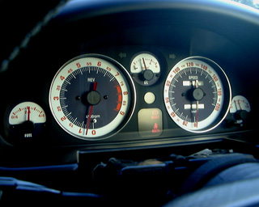
メーターそのものを交換すると高価で大変ですが、アートワークス・デワではユー ノスロードスター用のメーターの文字盤部分を作っていて、これだと安価に交換 することができます。デザインの種類も豊富でバックも黒っぽいタイプと白いタ イプがあります。今回交換したのはVersion MCというもので、紺のバックに白いふ ちという感じのものです。純正のメーターの針は白いので、バックが白いタイプ や、今回のように数字の部分のバックが白いタイプでは、そのままだと読みづら くなってしまいます。そこでAWD でも勧めているタミヤのX-7という赤色の塗料で 塗り直しました。またバックライトも純正は緑色ですが、オレンジ色に変更しまし た。このバックライトに使われているバルブ(電球)には緑色のカバーがかかって いて、これをオレンジ色のカバーに交換すればよいのですが、交換後、少し暗かっ たので、同じ消費電力で、より明るいスタンレー電気製のバルブに交換しました。
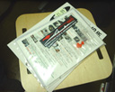 |
メールで発注後、２日くらいですぐに届いた。 |
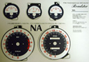 |
台紙にきれいに並べられている。 (バックライトのまわりを良くするためのスモークシートが付属していた。) |
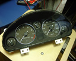 |
車からメーターをはずしてくる。 取りはずし方は付属の説明書にも書いてあるが、まずステアリングカラムカバー、 フードカバーをはずして、メーターを固定しているネジ４本をとって、 メーターの後ろについているコネクタ類をはずす。タコメーターのコネクタが 一番はずしにくい。 |
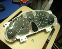 |
サイドのつめを押しながらメーターカバーをはずす。 |
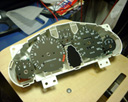 |
針をはずす。 このとき文字盤を傷つけないように注意するが、 結構硬くてなかなか抜けない。 |
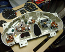 |
ネジをはずして、文字盤をはずす。 |
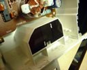 |
交換する新しい文字盤はリトラクタの部分の仕切りで、 バックライトの回り込みが遮られるらしい。 |
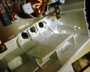 |
ここは別に見える部分ではないので きれいに仕上げる必要はない。 奥まった部分なのでペンチがやりやすかった。 |
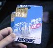 |
純正のメーターで使われていたランプはカバーを緑のものから オレンジのものに交換したが、幾分暗い感じがしたのでより明るい ものに交換。 |
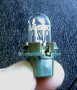 |
はじめ、LEDにしようかとも思ったが、LEDは拡散型でも 照射範囲が狭く、数が必要になって大変なのでスタンレー電気の ブランドRAYBRIGの「ハイパーバルブ」R103を使用。12V5Wで従来の２倍の 明るさだとか。実際、２倍かどうかはわからないが、確かに明るくなった。 |
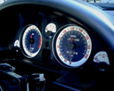 |
針の位置を調整後、カバーを取り付けて完成 燃料計と速度計は動かないので簡単に調整できるが、 他の計器は、オフセット位置がかなりマイナスになった。 |
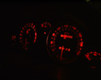 |
オレンジ色のバックライトもきれい |


ちなみに、ノーマルのメーター
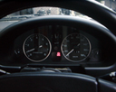 |
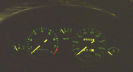 |


雰囲気ががらっと変わりました。オレンジ色のバックライトもいい感じです。 初め、針を強く差し込み過ぎていたせいで、速度計の針がある速度から急に 動き出したり、停車してもゼロにすぐにもどらないといった現象が出ました。 もう一度、慎重に針を抜いて、軽くさし直したら解決しました。調整は結構 大変で、カバーを取り付けずに少し走ったりしましたが、外が暗くなって、 微灯(バックライト)をつけると非常にまぶしいので危険です。 方向指示機の表示ランプも非常にまぶしいです。カバーをつけないで調整する場 合は明るいうちだけにするべきです。また、ステアリング・カラムのカバーも つけるならつけるでしっかりネジで固定し、はずす場合にはネジだけとるのでは なく、ちゃんとカバーも取り去るべきです。
ｂｙ すすたわり